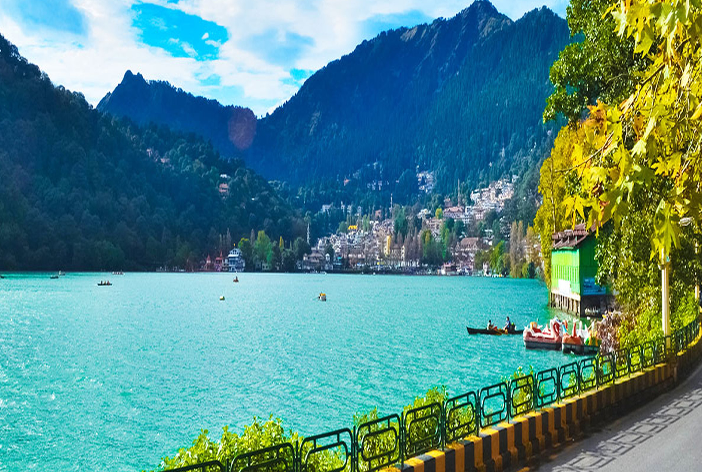
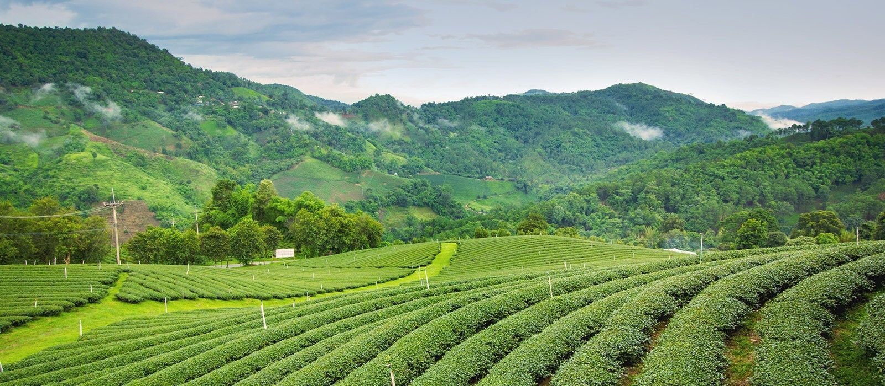
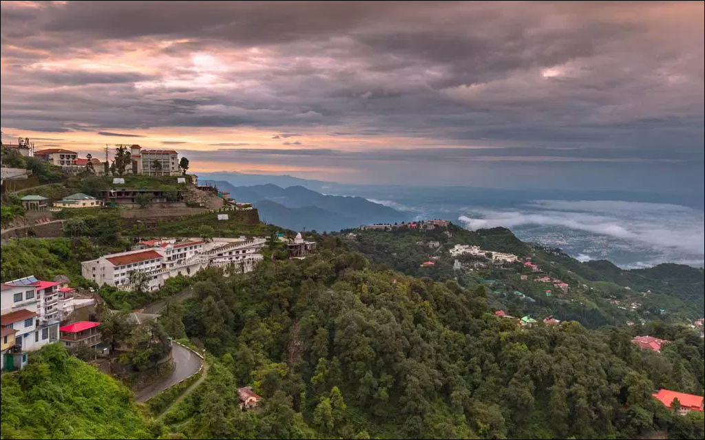
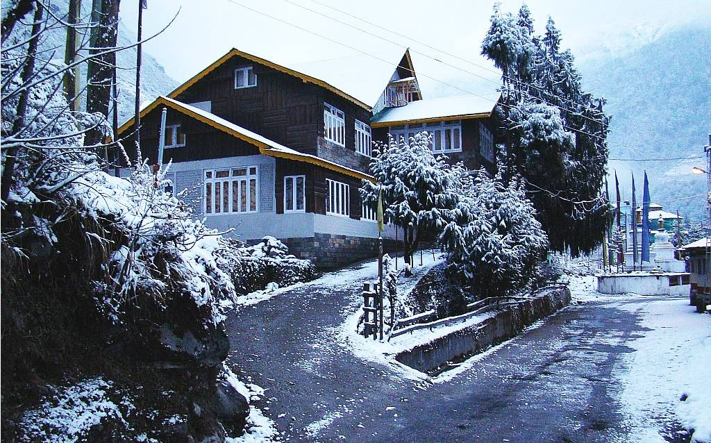

1. Nainital, Uttarakhand
Nainital is also known as a king of hill stations in India it is the state of Uttarakhand. Nanital is the judicial capital of Uttarakhand,
the high court is located here. The headquarters of the Kumaon division as well as the district. In Nainital, there is the house of the
governor in Uttrakhand. Nainital is the summer capital of the united provinces. It is also part of the Beautiful Hill Stations in India.
Nanital is famous for the Nani lake, there are awesome views and pleasant weather. It is the best place for a tourist. some other place
of the tourist insert in the mall, known as the Govind Vallabh pant marg. There are offices and malls are located in the mall.

2. Darjeeling, West Bengal
Darjeeling’s most well-liked attractions embody historic places of the hilly station like toy trains, monasteries, botanic gardens,
a zoo, and also the Darjeeling-Rangeet depression traveler tramway (the longest transport in Asia).
Darjeeling could be an excellent spot to run around and explore the tea estates, villages, and markets. do not visit throughout
the monsoon season tho’ — the region is one of all the wettest places in India is the best place of the hill station. The popular hill
station is a similar zoo, tiger hill, rock garden, etc. It is the best place to enjoy it. There are so much snowfall and a beautiful hill
and mountain in India.

3. Mussoorie, Uttarakhand
Mussoorie is the best hill station in the world. Mussoorie is famous for the municipal boards. It is the place of Dehradun district. It is an
awesome place in India. People can enjoy it. It is a Beautiful Hill Stations in India. Mussorie is part of the foothills of the Garhwal
Himalaya range.Mussoorie is the part of the military cantonment, which is considered the part of the greater Mussoorie, and there is a
township of Barlowganj and Jharipani. It is the part of the northeast Himalayan snow range, and to the south.It is the doon valley and
Shivalik ranges. It is the second-highest point in the original lal tibia in the lander, the height was 2275 meters (7464). Mussoorie is
also called the queen of the hills.

4. Lachung, Sikkim
Lachung is in the north part of Sikkim, which is a less-traveled destination. It is at around 100 km from Gangtok.
You can never go wrong if you choose Lachung as your offbeat hill station to travel this summer. It is a very beautiful place with
blooming wildflowers and Gurudongmar Lake as the main attraction. The place is an ideal way to drive to and chill during your summer
holidays. You not only get rest from hot summers but also get to view the surreal mountain ranges with snow-covered peak at the
length of a sight. The place has got several local hotels, or you can even try a homestay at this place enjoying the local cuisine.
The place also holds some beautiful waterfalls and apple orchards. It is located on the banks of river Lachung Chu, which flows
right in the middle of this village. Popular fruits grown in this city are apples, peaches, and apricots. One can even visit the Lachung
Gompa or handicraft center, which has got hand-woven rugs and blankets.